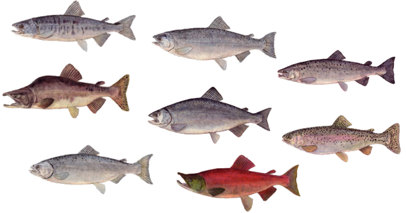

三文鱼介绍
三文鱼是非常灵性、聪明的鱼类。小时候生活在小溪河流中，长大后在广阔的海洋中遨游，成年后凭着执着的神奇力量从不远万里的深海海洋回溯到养育它的河流上游，它可以跨域激流，与棕熊搏斗，它可以奋力一跃达3.0米，将陡坡险途踩于脚下。三文鱼每年跋涉的光辉征程，使我们不得不赞叹生命的神奇与力量。
三文鱼营养丰富，具有高蛋白、高不饱和脂肪酸、低能量等特点，每100g三文鱼鱼肉中含蛋白质20g，不饱和脂肪酸3.9g，ω-3不饱和脂肪酸2.7g，更含有脑黄金之称DHA 1.3g，EPA0.6g，每100g鱼肉的热量仅有183大卡。经常食用对身体健康有众多益处。
三文鱼鱼品种目前世界上主要分为：大西洋三文鱼、三文鳟（又名虹鳟）、银鲑、红鲑、粉鲑、秋鲑（又名大马哈）、王鲑。
三文鱼品种图
各种三文鱼同猪排、牛排营养成分的比较表 ：
| 营养成分(100g) | 热量(kCal) | 蛋白质(g) | 脂肪(g) | 胆固醇(mg) | 不饱和和脂肪酸(g) | 钠盐(mg) |
|---|---|---|---|---|---|---|
| 三文鳟 | 171.0 | 19.2 | 10.4 | 0.9 | ||
| 三文鱼 | 183.0 | 20.0 | 11.0 | 59.0 | 1.3 | 59.0 |
| 银鲑 | 146.0 | 22.0 | 6.0 | 39.0 | 1.0 | 46.0 |
| 红鲑 | 168.0 | 21.0 | 9.0 | 62.0 | 2.0 | 47.0 |
| 粉鲑 | 116.0 | 20.0 | 4.0 | 52.0 | 1.2 | 67.0 |
| 秋鲑 | 120.0 | 20.0 | 4.0 | 74.0 | 0.6 | 50.0 |
| 王鲑 | 180.0 | 20.0 | 10.0 | 66.0 | 1.4 | 47.0 |
| 猪排 | 183 | 20.5 | 10.2 | |||
| 牛排 | 246 | 18.9 | 17.5 |